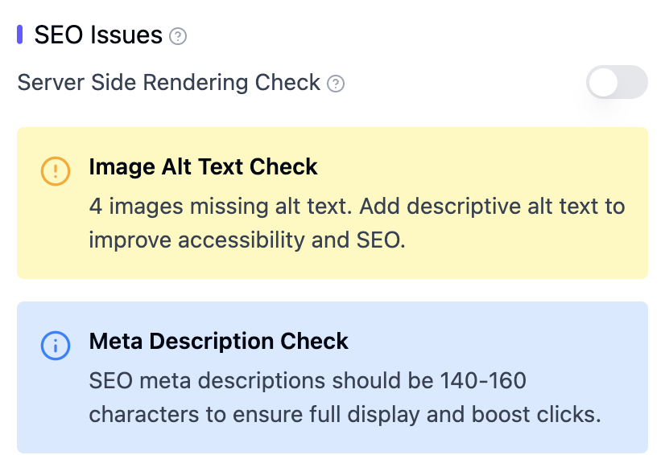
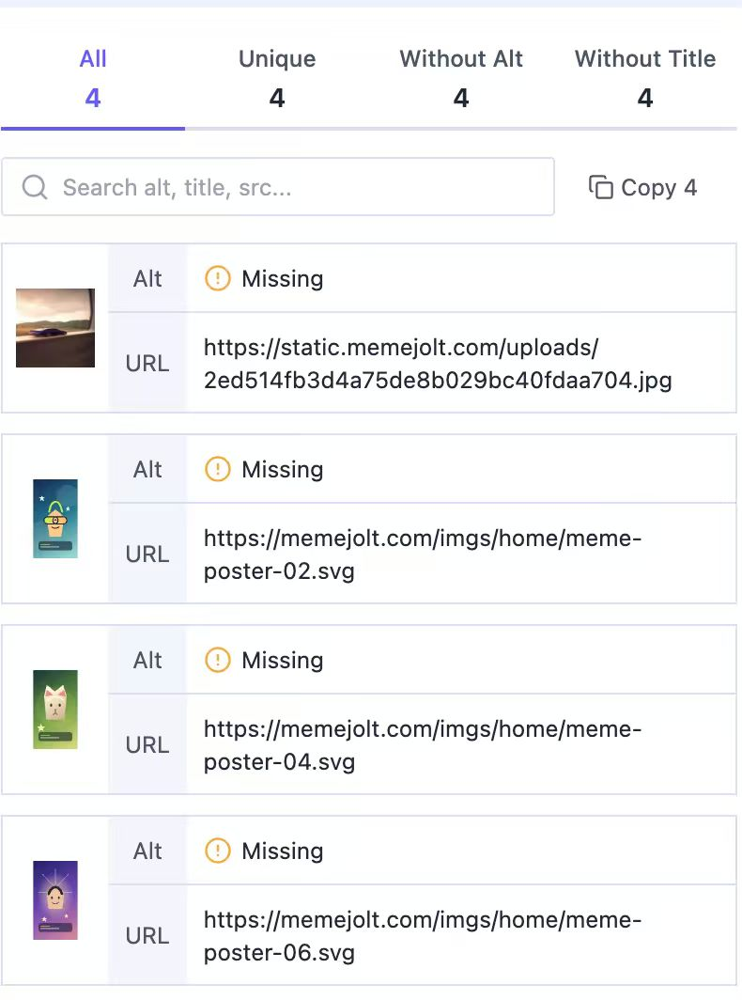
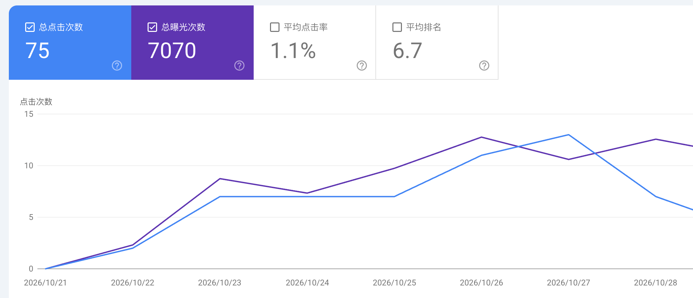
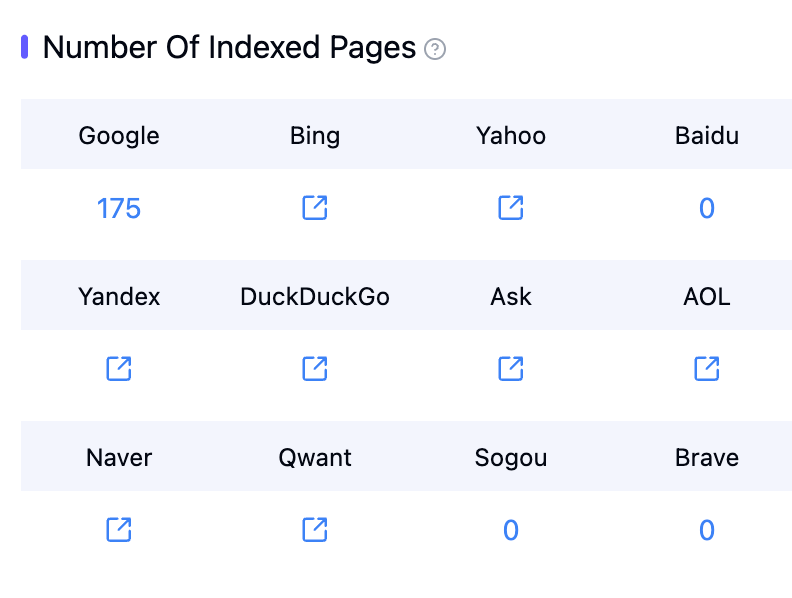
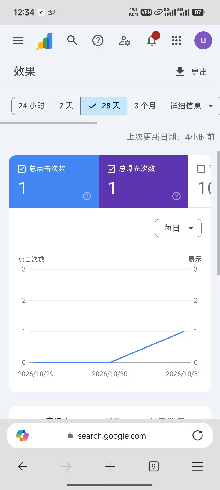
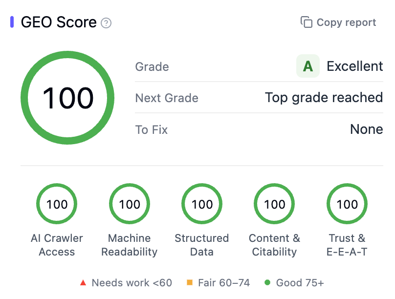
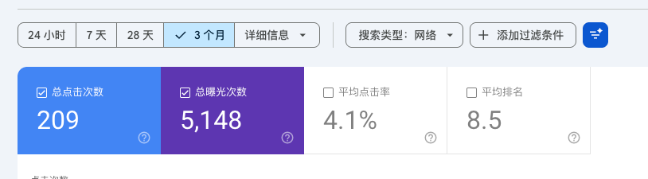

这段聊天的主线是给一个跑了一周的新站做 SEO/GEO 体检：整体已经能跑，但要补的三件事很明确——把 Google 和 Bing 的收录提交上、修复 4 张缺失 alt 的图片、把 meta description 控制到 140–160 字符；然后用 GSC 的点击、曝光和排名数据判断新词还有多久的热度窗口，决定是扩词根做长线，还是把它当成一次性的次新词机会。
一周跑起来的站，短板集中在 SEO 与 GEO 的基础项
Marvin 看过 Peyton 的站后给出的判断是「折腾一星期，整体看起来算可以了，seo 和 geo 的部分需要加强」。他用 AITDK 免费版插件跑了官网分析，问题集中在图片 alt 和 meta description 两处。

SEO Issues 面板显示 4 张图片缺少 alt 文本，meta description 的建议长度是 140–160 字符；面板里的 Server Side Rendering Check 开关处于关闭状态。

缺 alt 的 4 张图都来自被分析的 memejolt.com：一张 uploads 目录下的 jpg，以及 home 目录下的 meme-poster-02、04、06 三张 SVG。
同一份分析里，GEO Score 是 84 分（B，Good）：AI Crawler Access 和 Machine Readability 都是 100，Structured Data 82，Content & Citability 69，Trust & E-E-A-T 64，距离 A 还差 6 分，仍有 8 个待修项。
收录与 GSC：先把有没有数据这件事拆开
Marvin 先问「google 和 bing 收录是不是没提交」。Peyton 确认指的是 sitemap 站点索引，并表示当天去改。随后 Marvin 建议绑定 Google Search Console 看实际效果，并贴出自己的 28 天数据：75 次点击、7070 次曝光、平均点击率 1.1%、平均排名 6.7。

他自己的站收录情况是 Google 175 页，百度、搜狗和 Brave 都是 0。同一套页面在不同搜索引擎里的收录进度可以差很多，不能只看 Google。

新词的曝光要看时间尺度，热度窗口会过去
Peyton 贴出自己新站的 GSC：28 天只有 1 次点击、1 次曝光，问「这个站是刚开始就有曝光吗」。Marvin 的回答是「算次新词」「词本来也有一定热度」「seo 和 geo 也做了优化」，并贴出自己 GEO 100 分的站点作为对照。


GEO 100 分的面板里，五项全是 100，没有待修项。
grayson 的对照案例是之前随手上的 jev 新词站：3 个月累计 209 次点击、5148 次曝光、点击率 4.1%、平均排名 8.5，但他说「现在已经没人访问了」。Marvin 认为「你这个词其实能做起来」，同时提到自己的词「已经快砍单了」，准备扩词根、做长线运维。

工具：AITDK 做体检，muse 和 grok bot 做内容
- AITDK 免费版插件：直接分析官网的 SEO Issues 和 GEO Score，Marvin 推荐先用它跑一遍基础项。
- muse 和 grok bot：Marvin 连说「好用啊」「真的要用起来啊」「夸 100 遍」，小楼也认为 grok bot 真好用。
- 小楼提到的用法是「去注册一些网站，然后给自己的网站写软文」，属于群里交流的做法，聊天里没有展开效果验证。
聊天没有给出这些工具的价格、额度或稳定性结论，也没有对软文做法的效果做进一步验证。